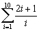
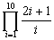

數列計算
編寫日期: 2006年12月28日
透過編寫簡單程式可以計算數列函數的總和或乘積，編寫方法很簡單，以下的兩個例子可以作為參考。
例題1: 計算

數列總和程式
| 2 | × | MR | + | 1 |
| = | ÷ | MR | = | Kin + 2 |
| 1 | M- | Kout 1 | x ≦ M | Kout 2 |
| MODE . |
註1: 數列函數變數為MR，計算其它數列只要修改銀色部份的程式即可，要注意使用Kin + 2將數列函數值累加到記憶K2中。
註2: 若果使用的是 fx-3900PV計數機，建議使用程式編輯模式只修改銀色部份的程式，因此可以不用重新輸入整個程式
輸入程式後，按 SHIFT KAC (必要) 1 Kin 1 10 SHIFT Min
再按 P1 (顯示答案為22.92896825)
例題2: 計算

數列乘積程式
| 2 | × | MR | + | 1 |
| = | ÷ | MR | = | Kin × 2 |
| 1 | M- | Kout 1 | x ≦ M | Kout 2 |
| MODE . |
註1: 數列函數變數為MR，計算其它數列只要修改銀色部份的程式即可，要注意使用Kin × 2將數列函數值的乘積儲存在記憶K2中。
註2: 若果使用的是 fx-3900PV計數機，建議使用程式編輯模式只修改銀色份的程式，因此可以不用重新輸入整個程式
輸入程式後，按 1 SHIFT Kin 2 (必要) 1 Kin 1 10 SHIFT Min
再按 P1 (顯示答案為3788.941406)